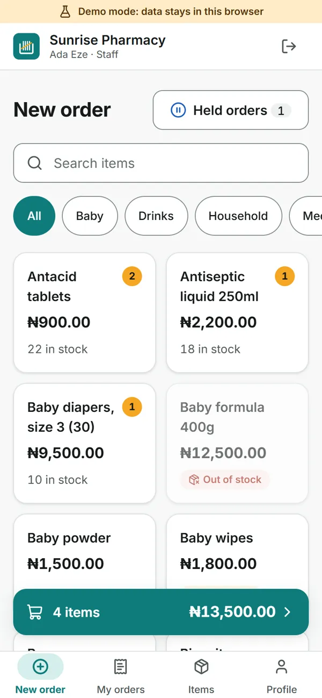

Business software: inventory and sales
Tallybox
Inventory and sales for small and large businesses, from shops and pharmacies to restaurants, opened from a link on the phones they already have. Every sale takes stock off automatically, and an order only counts once staff tick that payment was received.
- Role
- Designer and developer
- Status
- Live, version 0.1.0